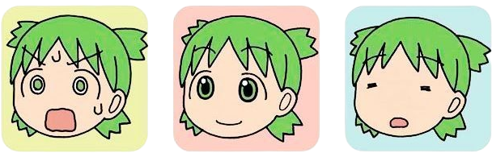
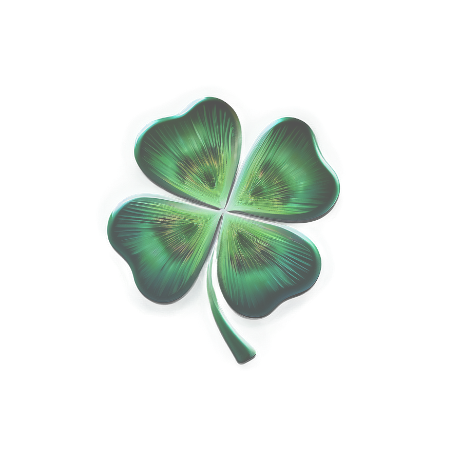

When it comes to evoking a mood, every detail matters. You usually don't notice it, but it is these detials that work together to get you into the vibe. For example, this environment's watercolors and bright shades brings to mind a sunny, wholesome children's book. Especially with the black text contrasted against the blue sky. It may remind you of bedtime stories of years past. This image is from the slice-of-life manga series Yotsuba&!

